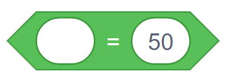
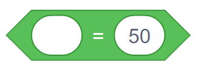
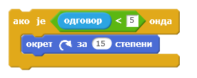

9.1. Условно извршавање (гранање)¶
У оквиру овог часа:
упознаћеш наредбе условног извршавања
упознаћеш логичке операторе и, или, није
вежбаћеш употребу оператора поређења
У овој лекцији научићеш како се програмирају алгоритми разгранате структуре. Основни алат за прављење разгранате структуре су наредбе условног извршавања, односно управљачки блокови који омогућавају условно извршавање. Ти блокови изглeдају овако:

Да бисмо употребили овакве блокове потребан нам је услов, а он се формира као код блока „понављај до …”.
Када користимо први блок са једним устима, наредбе у устима ће се извршити једном ако је услов испуњен, а иначе неће ни једном. Код другог блока који има двоја уста, у случају да је услов испуњен извршавају се наредбе у горњим устима, а ако није испуњен извршавају се наредбе у доњим устима.
Примери¶
У наредна два примера илустроваћемо коришћење наредби гранања, упознати се са начином прихватања улазних података помоћу наредбе „питај … чекај”, операторима поређења и логичким операторима. Напомињемо да смо у претходним лекцијама већ користили неке од блокова из групе „Оператори”.
Пример 1 - Поздрав¶
Помоћу ове скрипте мачак ће те питати колико је сати да би знао како да те поздрави у наставку програма. Ако унесеш број мањи од 21, мачак ће рећи „Довиђења.”, а у супротном ће рећи „Лаку ноћ.”

Блок  се налази у групи блокова „Осећаји” које ћемо детаљније упознати у следећој лекцији. Извршавањем овог блока лик поставља питање кориснику, а одговор који корисник откуца се смешта у
се налази у групи блокова „Осећаји” које ћемо детаљније упознати у следећој лекцији. Извршавањем овог блока лик поставља питање кориснику, а одговор који корисник откуца се смешта у  .
.
Наилазак на управљачки блок током извршавања програма је као наилазак на скретницу, јер извршавање може да се настави једним или другим путем.
У програмирању се ова два могућа пута извршавања зову гране, па се зато и управљачки блок за условно извршавање зове гранање или наредба гранања. Група наредби у горњим устима блока се назива да грана јер се извршава када је одговор на питање из услова да, док, слично томе, наредбе у доњим устима чине не грану.
Упиши изостављену реч.


У скриптама са простом линијском структуром свака наредба се извршава тачно једанпут. У скриптама са цикличном структуром постоје наредбе које се могу извршавати више пута. Каква је структура скрипти код којих се неке наредбе неће извршити ниједном?
(Одговор напиши малим словима, ћирилицом)
Оператори поређења¶
У претходном примеру смо користили и оператор за поређење добијеног одговора и броја 21. У групи блокова Оператори постоје ова три оператора за поређење:
 


Као што вероватно претпостављаш, услов формиран овим операторима је испуњен ако између леве и десне стране важи однос описан знаком у средини, као у математици.
Резултат оваквих оператора је увек тачно или нетачно. Двокликом на оператор у окружењу Скреч добијамо исписан његов резултат, као у примерима A и B на следећој слици.

У примеру А видимо да је резултат испитивања испуњености услова вредност false, што значи нетачно. И заиста, нетачно је да су бројеви 20 и 50 једнаки. У примеру B испитивали смо да ли је број који је унео корисник мањи од броја 50 и добили вредност true, што значи тачно. Заиста, корисник је унео број 32, а тај број је мањи од броја 50.
Одговори на следећа питања.
- 5
- -5
- 0
- 10
Q-68: Који од одговора корисника ће омогућити извршавање наредбе у ДА грани? (Изабери све тачне одговоре)
Логички оператори¶
Можда примећујеш да би у претходном примеру мачак у 1 сат по поноћи одговорио Довиђења, а не Лаку ноћ. Мачак за сада одговара са Лаку ноћ само у 21, 22 и 23 сата, а било би боље да тако одговара на пример и у 0, 1, 2, 3 и 4 сата.
Да бисмо научили мачка да примереније одговори, треба нам начин да му кажемо да са Довиђења одговара само од 5 до 20 сати, а са Лаку ноћ у осталим случајевима. Услов
одговор је између 5 и 20
се овако може изразити комбиновањем оператора поређења које смо упознали:
(одговор је већи од 4) и (одговор је мањи од 21)
За комбиновање једноставнијих услова у сложеније, користе се ови оператори из групе блокова Оператори:
Резултат оператора
 је true ако су тачна оба једноставнија услова;
је true ако су тачна оба једноставнија услова;Резултат оператора
 је true ако је тачан бар један од једноставнијих услова;
је true ако је тачан бар један од једноставнијих услова;Резултат оператора је true ако није испуњен једноставнији услов (вредност једноставнијег услова је false, тј. нетачно).
У окружењеу Скреч резултате логичких оператора такође можемо да добијемо двокликом на оператор. Да бисмо потврдили да разумемо како функционишу логички оператори, погледајмо следећу слику:

Логички оператор ИЛИ даје вредност true зато што је испуњен бар један од два услова (број који је корисник унео није једнак 50, али јесте једнак 40).
Логички оператор НИЈЕ даје вредност false зато што је под-услов испуњен (40 јесте мање од 50), па је цела изјава „није тачно да је 40 мање од 50” нетачна.
Сада смо спремни да дорадимо претходни пример.
Пример 2 - Поздрав после поноћи¶
Помоћу ове скрипте мачак уме да каже Довиђења у току дана (од 5 до 20 сати), а Лаку ноћ у току ноћи (од 21 до 4 сата).

Исти резултат можемо да добијемо и мало другачије:

Напомена. У групу „Оператори” спадају још и оператори за основне аритметичке операције - сабирање, одузимање, множење и дељење, оператор за генерисање случајних бројева и други, које ћемо касније упознати.
Погледај видео:
Пошто си провежбао/провежбала како да употребиш наредбе гранања, погледај сада видео у коме ћемо применити наредбе гранања како бисмо унапредили нашу игрицу.

{kind=link}
{kind=link}
{kind=link}
{kind=link}
{kind=link}
Шта смо научили¶
У овој лекцији упознали смо неке од наредби гранања, наредбу за прихватање улазних података, операторе поређења и логичке операторе.
Додатак¶
Ако желиш, погледај поглавље Наредбе гранања у Петљином практикуму. Тамо можеш да нађеш још нека објашњења и занимљиве пројекте.
Петљин студио Гранање на сајту Скреча садржи урађене пројекте за задатке сличне оним којима смо се овде бавили.

Провери своје знање пролазећи кроз наредна питања и вежбе.